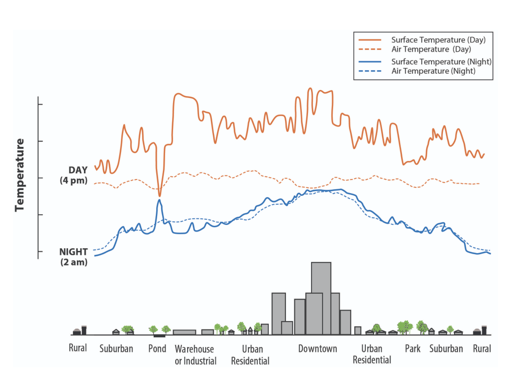
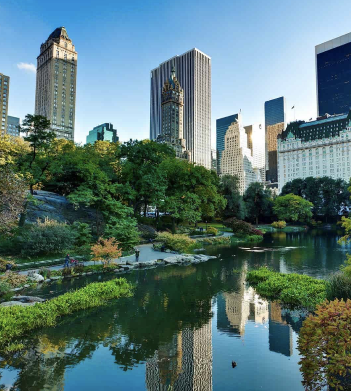

Urban Heat Islands
CS329E Summer 2021

Urban Heat Islands take place when structures like buildings, roads and other sorts of infrastructure are highly concentrated together. These structures absorb and reemit the heat of the sun much more intensely than natural landscapes, therefore, these concentrated areas become so-called “islands” of higher temperatures. These islands result in temperatures ranging from 1-7 degrees Fahrenheit higher than natural areas during the day, and 2-5 degrees higher at night.
| Reduced Natural Landscapes in Urban Areas |
Urban Material Properties |
Urban Geometry |
Heat Generated From Human Activities |
Weather and Geography |
 |
Though similar at night, surface air temperatures are significantly higher than the atmospheric air temperature during the day. The dip and spike over the pond reflects how the temperature of a pool of water is typically consistent day and night because the water does not absorb and reflect heat in the same way that roads and buildings do. |
Two Types of Heat Islands:
|
Trees and Vegetation |
1 |
 |
Cool Roofs |
2 |
|
Green Roofs |
3 |
|
Cool Pavements |
4 |
|
Smart Growth |
5 |